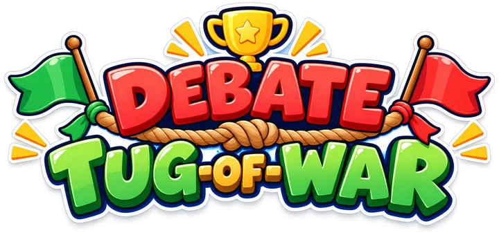
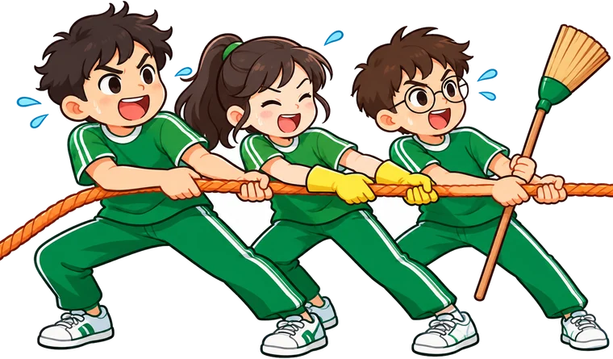
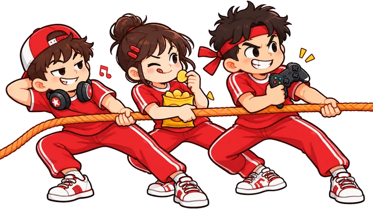

SHOULD WIN
SHOULDN’T WIN


Classroom debate
Ready to argue?
Model answer
Press “Next argument” to draw a card.
◀ SHOULD pulls
SHOULDN’T pulls ▶
Next argument
Reset
Rules
Split the class in two:
SHOULD
on the left,
SHOULDN’T
on the right. Draw a card, give that side 30–45 seconds to argue it in English, then press their
pull
button if they argued well. First side to drag the flag to its line wins.